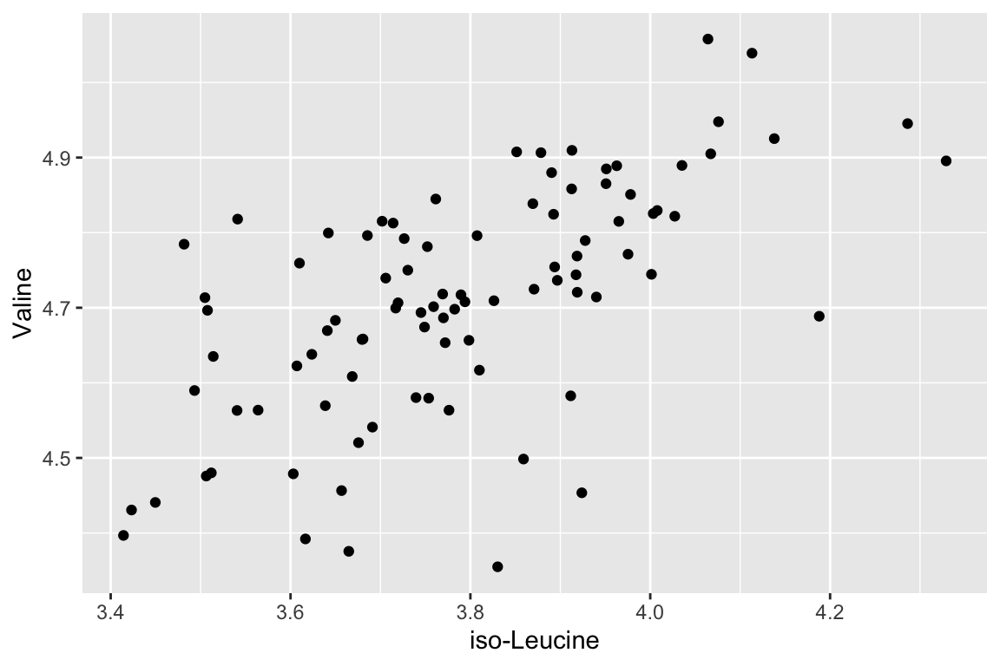
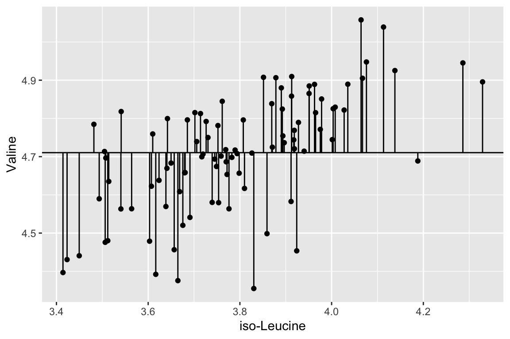
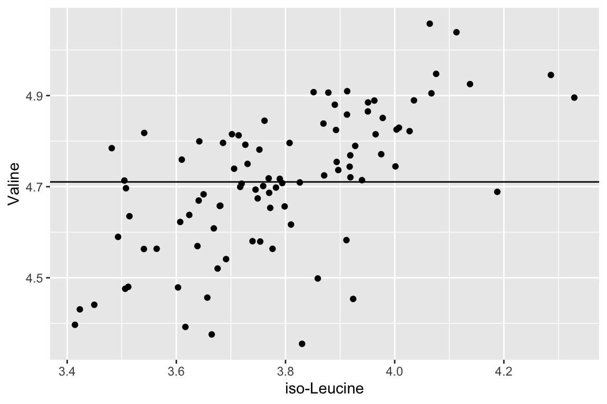
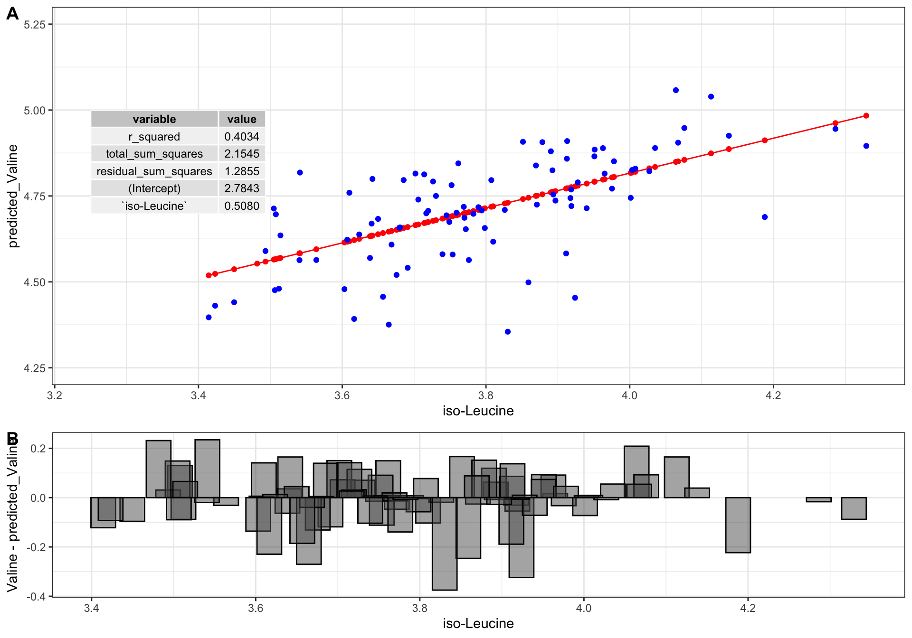
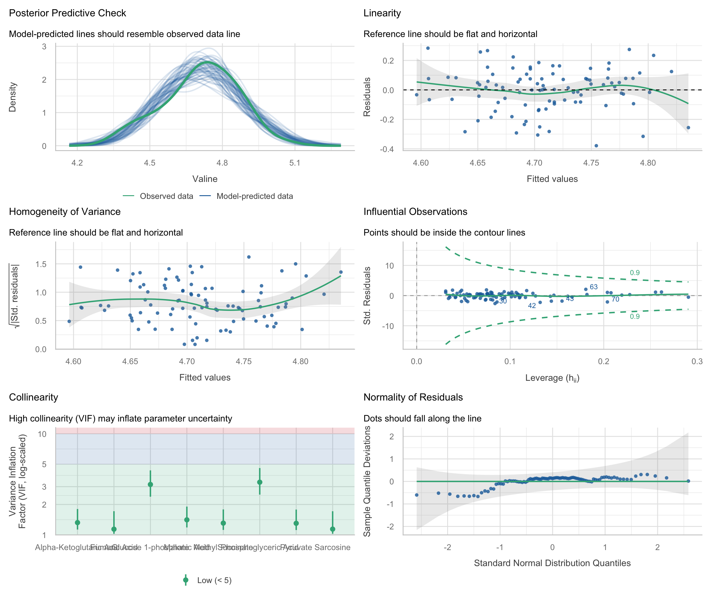

regression models

A regression model predicts a number from one or more measured inputs. This chapter fits straight-line models, reads what they say about the relationships in the data, uses them to predict values for samples that were never part of the fit, and checks whether a model can be trusted.
model use
Next on our quest to develop our abilities in analytical data exploration is modeling. We will discuss two main ways to use numerical models: for inferential uses and predictive uses.
Inferential uses aim to understand and quantify the relationships between variables, focusing on the significance, direction, and strength of these relationships to draw conclusions about the data. When using inferential models we care a lot about the exact inner workings of the model because those inner workings are how we understand relationships between variables.
Predictive uses are designed with the primary goal of forecasting future outcomes or behaviors based on historical data. When using predictive models we often care much less about the exact inner workings of the model and instead care about accuracy. In other words, it matters less how the model works as long as it is accurate.
The straight-line models in this chapter serve both purposes at once: their inner workings are simple enough to read directly, and they can also be used to predict. More flexible models, whose inner workings are harder to read and which are judged mainly on their predictive accuracy, are the subject of the machine learning chapter.
In this course, we will build models using a function called buildModel2(). To use it, we give it our data and tell it which sets of values we want to relate. To do that, we need to specify (at least) two things:
input_variables: the input variables (sometimes called “features” or “predictors”) the model should use as inputs for the prediction. Depending on the model, these could be continuous or categorical variables.output_variable: the variable that the model should predict. Depending on the model, it could be a continuous value (regression) or a category/class (classification).
For model building, we also need to handle missing data. buildModel2() stops if the data contain any missing values, so one way forward is to impute them, which means filling in each missing value with something. There are many ways to do this; here we use the median value of each column, with the impute() function from the Hmisc package:
single linear regression
We will start with some of the simplest models: linear models. There are a variety of ways to build linear models in R, but we will use buildModel2(), as mentioned above. First, we will use least squares regression to model the relationship between input and output variables. Suppose we want to know if the abundances of iso-Leucine and Valine are related in our metabolomics dataset:
ggplot(metabolomics_data) +
geom_point(aes(x = `iso-Leucine`, y = Valine))
Figure: Valine and iso-leucine abundance in patient blood samples. Scatter plot with iso-leucine abundance on the horizontal axis and valine abundance on the vertical axis; the points rise from left to right. Each point is one patient. Data: metabolomics_data.
It looks like there might be a relationship! Let’s build a linear regression model and use it inferentially to examine the details of that relationship:
basic_regression_model <- buildModel2(
data = metabolomics_data,
model_type = "linear_regression",
input_variables = "iso-Leucine",
output_variable = "Valine"
)
names(basic_regression_model)
## [1] "model_type" "model" "metrics"The output of buildModel2() consists of three things: the model_type, the model itself, and the metrics describing the model and its performance. Let’s look at the model:
basic_regression_model$model
##
## Call:
## lm(formula = formula, data = data, model = TRUE, x = TRUE, y = TRUE,
## qr = TRUE)
##
## Coefficients:
## (Intercept) `iso-Leucine`
## 2.784 0.508This is a linear model stored inside a special object type inside R called an lm. They can be a bit tricky to work with, but the metrics table makes the important parts easy to reach. Let’s look at the metrics:
basic_regression_model$metrics
## variable value std_err type p_value
## 1 r_squared 0.4034 NA statistic NA
## 2 total_sum_squares 2.1545 NA statistic NA
## 3 residual_sum_squares 1.2855 NA statistic NA
## 4 (Intercept) 2.7843 0.2459 coefficient 0
## 5 `iso-Leucine` 0.5080 0.0648 coefficient 0
## p_value_adj
## 1 NA
## 2 NA
## 3 NA
## 4 0
## 5 0It shows us the r-squared, the total and residual sum of squares, the intercept (b in y = mx + b), and the coefficient for iso-Leucine (i.e. the slope, m), as well as some other things (we will talk about them in a second). The type column separates the two kinds of row, so filter() pulls out just the coefficients:
basic_regression_model$metrics %>%
filter(type == "coefficient")
## variable value std_err type p_value
## 1 (Intercept) 2.7843 0.2459 coefficient 0
## 2 `iso-Leucine` 0.5080 0.0648 coefficient 0
## p_value_adj
## 1 0
## 2 0Note that a variable whose name contains a space or a hyphen, like iso-Leucine, is listed in the variable column with backticks around it (`iso-Leucine`), so filtering on type is the more reliable way to find a coefficient. The slope here says that for every one-unit increase in iso-Leucine abundance, the model expects Valine abundance to rise by about 0.51.

Figure: Using a model to make predictions. A fitted model takes values of the input variable and returns the value of the output variable that the model expects for each one.
We can also use a function called predictWithModel() to make predictions using the model. We give it the model and the data we want predictions for. Here we predict a Valine abundance for every patient in the data set, from their iso-Leucine abundance, and store the predictions as a new column next to the measured values:
predictions_from_basic_linear_model <- metabolomics_data %>%
mutate(predicted_Valine = predictWithModel(
data = metabolomics_data,
model_type = "linear_regression",
model = basic_regression_model$model
)$value)
predictions_from_basic_linear_model %>%
select(`iso-Leucine`, Valine, predicted_Valine) %>%
head()
## # A tibble: 6 × 3
## `iso-Leucine` Valine predicted_Valine
## <dbl> <dbl> <dbl>
## 1 3.60 4.48 4.61
## 2 3.97 4.82 4.80
## 3 4.29 4.95 4.96
## 4 3.92 4.72 4.78
## 5 3.69 4.54 4.66
## 6 3.75 4.67 4.69predictWithModel() returns a table with one column, value, so $value pulls out the predictions themselves. Because we have the measured Valine values in our data set, we can compare the predicted values to the measured values to see how well our model is doing:
ggplot(predictions_from_basic_linear_model) +
geom_line(aes(x = `iso-Leucine`, y = predicted_Valine), color = "red") +
geom_point(aes(x = `iso-Leucine`, y = predicted_Valine), color = "red") +
geom_point(aes(x = `iso-Leucine`, y = Valine), color = "blue")
Figure: Measured and predicted valine abundance. Scatter plot with iso-leucine abundance on the horizontal axis and valine abundance on the vertical axis; blue points are measured values and the red line and points are the values predicted by a linear model of valine on iso-leucine. Each blue point is one patient. Data: metabolomics_data.
Now let’s talk about evaluating the quality of our model. For this we need some means of assessing how well our line fits our data. We will use residuals: the distance between each of our points and our line.
ggplot(predictions_from_basic_linear_model) +
geom_point(aes(x = `iso-Leucine`, y = Valine)) +
geom_line(aes(x = `iso-Leucine`, y = predicted_Valine)) +
geom_segment(aes(x = `iso-Leucine`, y = Valine, xend = `iso-Leucine`, yend = predicted_Valine))
Figure: Residuals of the linear model of valine on iso-leucine. Scatter plot of measured valine against iso-leucine abundance with the model’s line; each vertical segment joins a measured value to the model’s prediction for it, so its length is that patient’s residual. Data: metabolomics_data.
We can calculate the sum of the squared residuals:
sum((predictions_from_basic_linear_model$Valine - predictions_from_basic_linear_model$predicted_Valine)^2)
## [1] 1.285459Let’s call that the “residual sum of the squares”. Does that mean our model is good? On its own, the number cannot tell us; it has to be compared to something. Let’s compare it to a super simple model that is just defined by the mean y value of the input data.
ggplot(metabolomics_data) +
geom_point(aes(x = `iso-Leucine`, y = Valine)) +
geom_hline(aes(yintercept = mean(Valine)))
Figure: A mean-only model of valine abundance. Scatter plot of valine against iso-leucine abundance with a horizontal line at the mean valine abundance, the prediction of a model that ignores iso-leucine. Each point is one patient. Data: metabolomics_data.
A pretty bad model. How much better is our linear model than the flat line model? Let’s measure the distance between each point and the flat line:
ggplot(metabolomics_data) +
geom_point(aes(x = `iso-Leucine`, y = Valine)) +
geom_hline(aes(yintercept = mean(Valine))) +
geom_segment(aes(x = `iso-Leucine`, y = Valine, xend = `iso-Leucine`, yend = mean(Valine)))
Figure: Residuals of the mean-only model of valine abundance. Scatter plot of valine against iso-leucine abundance with a horizontal line at the mean valine abundance; each vertical segment joins a measured value to the mean. Each point is one patient. Data: metabolomics_data.
Let’s call that the “total sum of the squares”, and now we can compare it to our “residual sum of the squares”:
residual_sum_of_squares <- sum(
(predictions_from_basic_linear_model$Valine - predictions_from_basic_linear_model$predicted_Valine)^2
)
total_sum_of_squares <- sum(
(metabolomics_data$Valine - mean(metabolomics_data$Valine))^2
)
1 - (residual_sum_of_squares / total_sum_of_squares)
## [1] 0.403351That is our R squared value. It is equal to 1 minus the ratio of the “residual sum of the squares” to the “total sum of the squares”. The R squared value can be thought of as:
- The amount of variance in the output variable explained by the input variable.
- How much better the line of best fit describes the data than the flat line.
Now, let’s put it all together and make it pretty:
top <- ggplot(predictions_from_basic_linear_model) +
geom_line(aes(x = `iso-Leucine`, y = predicted_Valine), color = "red") +
geom_point(aes(x = `iso-Leucine`, y = predicted_Valine), color = "red") +
geom_point(aes(x = `iso-Leucine`, y = Valine), color = "blue") +
annotate(geom = "table",
x = 3.25,
y = 5,
label = list(select(basic_regression_model$metrics, variable, value))
) +
coord_cartesian(ylim = c(4.25,5.25)) +
theme_bw()
bottom <- ggplot(predictions_from_basic_linear_model) +
geom_col(
aes(x = `iso-Leucine`, y = Valine - predicted_Valine),
width = 0.03, color = "black", position = "dodge", alpha = 0.5
) +
theme_bw()
cowplot::plot_grid(top, bottom, ncol = 1, labels = "AUTO", rel_heights = c(2,1))
Figure: A linear model of valine abundance on iso-leucine abundance. (A) Scatter plot of measured valine (blue points) and model predictions (red line and points) against iso-leucine abundance, with the model’s metrics in an inset table. (B) Bar plot of the residual (measured minus predicted valine) for each patient against iso-leucine abundance. Each point or bar is one patient. Data: metabolomics_data.
predicting with a model
A fitted model is not tied to the data it was built from. It can predict the output for any table that has the same input columns, including samples whose output was never measured. That is the predictive use of a model, and it is often the reason for building one.
metabolomics_unknown holds measurements from seven new patients. It has every metabolite column that metabolomics_data has, so our iso-Leucine model can predict a Valine abundance for each of them. The table has no column identifying the patients, though, so first we number the rows. Then predictWithModel() can carry that column through to its output with the id_cols argument, which keeps every prediction attached to the patient it belongs to:
unknown_patients <- metabolomics_unknown %>%
mutate(patient = row_number())
unknown_predictions <- predictWithModel(
data = unknown_patients,
model_type = "linear_regression",
model = basic_regression_model$model,
id_cols = "patient"
)
unknown_predictions
## patient value
## 1 1 4.667270
## 2 2 4.686246
## 3 3 4.563589
## 4 4 4.630664
## 5 5 4.751102
## 6 6 4.651151
## 7 7 4.594742The output is an ordinary table, so the verbs from the wrangling chapter work on it. We can read off the prediction for a single patient:
Or sort the patients by their predicted value, or keep only those predicted to be above some level:
unknown_predictions %>%
arrange(desc(value))
## patient value
## 1 5 4.751102
## 2 2 4.686246
## 3 1 4.667270
## 4 6 4.651151
## 5 4 4.630664
## 6 7 4.594742
## 7 3 4.563589
unknown_predictions %>%
filter(value > 4.66)
## patient value
## 1 1 4.667270
## 2 2 4.686246
## 3 5 4.751102A prediction is only as good as the model behind it. This model explains about 40% of the variation in Valine (its r-squared is 0.40), so these predictions are rough. Using more of what was measured is the next step.
concept check
Fill in the blank with the column that keeps each prediction attached to its patient, then press Run. This cell uses basic_regression_model from the previous check, so run that one first.
Self-check: which of the seven new patients does the model predict to have the highest Valine abundance?
multiple linear regression
Now let’s try a multiple linear regression model. This is the same as a simple linear regression model, but with more than one input variable. Simple and multiple linear regression are both statistical methods used to explore the relationship between one or more independent variables (input variables) and a dependent variable (output variable). Simple linear regression involves one independent variable to predict the value of one dependent variable, using a linear equation of the form y = mx + b. Multiple linear regression extends this concept to include two or more independent variables, with a typical form of y = m1x1 + m2x2 + … + b. While simple linear regression describes a straight-line relationship between one input and the output, multiple linear regression fits a multi-dimensional plane in the variable space, providing a more nuanced picture of how the inputs together influence the output. It can give more accurate predictions, though it also requires more careful consideration of assumptions and of correlations among the inputs themselves. Let’s try it with the first 30 metabolites in our data set:
multiple_input_regression_model <- buildModel2(
data = metabolomics_data,
model_type = "linear_regression",
input_variables = colnames(metabolomics_data)[3:32],
output_variable = "Valine"
)
basic_regression_model$metrics %>% filter(type == "statistic")
## variable value std_err type p_value
## 1 r_squared 0.4034 NA statistic NA
## 2 total_sum_squares 2.1545 NA statistic NA
## 3 residual_sum_squares 1.2855 NA statistic NA
## p_value_adj
## 1 NA
## 2 NA
## 3 NA
multiple_input_regression_model$metrics %>% filter(type == "statistic")
## variable value std_err type p_value
## 1 r_squared 0.8942 NA statistic NA
## 2 total_sum_squares 2.1545 NA statistic NA
## 3 residual_sum_squares 0.2280 NA statistic NA
## p_value_adj
## 1 NA
## 2 NA
## 3 NAThe 30-input model explains far more of the variation in Valine than the iso-Leucine model does (an r-squared of 0.89 against 0.40). Comparing each model’s predictions with the measured values shows the same thing:
model_comparison_data <- metabolomics_data %>%
mutate(
single_input_predicted_Valine = predictWithModel(
data = metabolomics_data,
model_type = "linear_regression",
model = basic_regression_model$model
)$value,
multiple_input_predicted_Valine = predictWithModel(
data = metabolomics_data,
model_type = "linear_regression",
model = multiple_input_regression_model$model
)$value
)
plot1 <- ggplot(model_comparison_data) +
geom_point(aes(x = Valine, y = single_input_predicted_Valine))
plot2 <- ggplot(model_comparison_data) +
geom_point(aes(x = Valine, y = multiple_input_predicted_Valine))
plot_grid(plot1, plot2, nrow = 1, labels = "AUTO")
Figure: Predicted against measured valine abundance for two linear models. (A) Predictions of the single-input model (iso-leucine only). (B) Predictions of the 30-input model. In each scatter plot measured valine abundance is on the horizontal axis and predicted valine abundance on the vertical axis; points on a diagonal line would be perfect predictions. Each point is one patient. Data: metabolomics_data.
concept check
Fill in the blank with the metric that measures how much of the variation in Valine a model explains, then press Run.
Self-check: what does the higher r-squared of the 30-input model tell us?
which inputs matter most
Once a model has several inputs, a natural question is which of them drives the prediction. The metrics table reports a coefficient, a standard error and a p-value for every input:
- Coefficient value: its magnitude and sign describe the expected change in the output when that input increases by one unit while all the other inputs are held constant.
-
p_value(orp_value_adj, adjusted for testing many inputs at once) is the p-value from testing whether that input’s coefficient is different from zero. Small p-values highlight inputs that are likely to matter after accounting for the rest.
It is tempting to rank the inputs by the size of their coefficients, but a coefficient is measured in the units of its own input, so raw coefficients cannot be compared with each other. Let’s see what goes wrong, with a model of Valine built from four metabolites:
four_input_model <- buildModel2(
data = metabolomics_data,
model_type = "linear_regression",
input_variables = c("Phenylalanine", "2-Aminoadipate", "Tryptophan", "Propionate"),
output_variable = "Valine"
)
four_input_model$metrics %>%
filter(type == "coefficient", variable != "(Intercept)") %>%
arrange(desc(abs(value)))
## variable value std_err type p_value
## 1 Phenylalanine 0.2917 0.1115 coefficient 0.01047614
## 2 Tryptophan 0.1687 0.0548 coefficient 0.00276583
## 3 `2-Aminoadipate` 0.1516 0.0341 coefficient 0.00002548
## 4 Propionate 0.0564 0.0315 coefficient 0.07666589
## p_value_adj
## 1 0.03142842
## 2 0.01106332
## 3 0.00012740
## 4 0.15333178Phenylalanine has by far the largest coefficient. But Phenylalanine barely varies from patient to patient: its standard deviation is about 0.12, against about 0.4 for 2-Aminoadipate and Propionate. A one-unit change in Phenylalanine is therefore an enormous change, far bigger than anything seen in the data, so its coefficient is large simply because its unit is large.
The fix is to put every input on the same footing before fitting, by scaling each one to a mean of zero and a standard deviation of one (scaling is introduced in the networks chapter). Each coefficient then means “the change in the output for a one-standard-deviation change in this input”, which can be compared across inputs:
scaled_metabolomics_data <- metabolomics_data %>%
mutate(across(c(Phenylalanine, `2-Aminoadipate`, Tryptophan, Propionate), scale))
scaled_four_input_model <- buildModel2(
data = scaled_metabolomics_data,
model_type = "linear_regression",
input_variables = c("Phenylalanine", "2-Aminoadipate", "Tryptophan", "Propionate"),
output_variable = "Valine"
)
scaled_four_input_model$metrics %>%
filter(type == "coefficient", variable != "(Intercept)") %>%
arrange(desc(abs(value)))
## variable value std_err type p_value
## 1 `2-Aminoadipate` 0.0596 0.0134 coefficient 0.00002548
## 2 Tryptophan 0.0391 0.0127 coefficient 0.00276583
## 3 Phenylalanine 0.0342 0.0131 coefficient 0.01047614
## 4 Propionate 0.0238 0.0133 coefficient 0.07666589
## p_value_adj
## 1 0.00010192
## 2 0.00829749
## 3 0.02095228
## 4 0.07666589After scaling, 2-Aminoadipate has the largest coefficient and Phenylalanine drops to third. The scaled ranking also agrees with the p-values, where 2-Aminoadipate has the smallest. Three further points:
- The intercept is left out of the ranking with
variable != "(Intercept)". It is not a measurement but the model’s baseline (after scaling it is simply the mean Valine abundance), so it does not belong in a list of inputs. - Scaling changes the units of the coefficients, not the fit. Both models have the same r-squared and make the same predictions:
four_input_model$metrics %>% filter(variable == "r_squared")
## variable value std_err type p_value p_value_adj
## 1 r_squared 0.5278 NA statistic NA NA
scaled_four_input_model$metrics %>% filter(variable == "r_squared")
## variable value std_err type p_value p_value_adj
## 1 r_squared 0.5278 NA statistic NA NA- Use the scaled model to compare inputs, and the model built on the data as measured to make predictions. A model fitted on scaled inputs expects scaled inputs, so giving it the raw columns of a new table, such as
metabolomics_unknown, produces nonsense.
assessing regression models
There are three aspects of a regression model that we should check on, to make sure the model isn’t violating any assumptions that we make when declaring the model to be valid:
-
Residual-based assumptions. These checks are specifically about the behavior of residuals, which are the differences between observed values and model predictions. This group includes:
Linearity: examines if residuals show a random scatter around zero, indicating a linear relationship between the inputs and the output variable. Patterns or curves in this plot may indicate that the model does not adequately capture the true relationship, suggesting potential non-linearity.
Homoscedasticity (homogeneity of variance): looks at the spread of residuals to confirm that variance is consistent across fitted values. In other words, the spread of the residuals should be uniform regardless of the fitted values. To assess homoscedasticity, residuals are plotted against fitted values. A horizontal band of residuals indicates that the variance is consistent, supporting the homoscedasticity assumption. Conversely, patterns such as a funnel shape, where residuals spread out or contract as fitted values increase, suggest heteroscedasticity, indicating that the variance of errors changes with the level of the independent variables.
Normality of residuals: assesses whether residuals follow a normal distribution, crucial for statistical inference in regression. To check this characteristic, a quantile-quantile (Q-Q) plot is used, where the residuals are plotted against a theoretical normal distribution. If the residuals are normally distributed, the points will align closely along a straight line. Significant deviations from this line indicate departures from normality, which may affect the reliability of statistical inferences drawn from the model.
-
Input relationships. This check pertains to relationships among the input variables themselves, rather than their relationship with the output variable. In this case:
- Collinearity: assesses multicollinearity, which occurs when inputs are highly correlated with each other. This can lead to inflated variances of regression coefficients, making it challenging to attribute effects to individual inputs. This check helps ensure that inputs are independent enough to provide clear, interpretable results for each variable’s influence on the output.
-
Model fit and influence. These checks look at the overall fit of the model and assess if specific data points have undue influence on the model’s results. This group includes:
Posterior predictive check: this checks if model predictions align well with observed data, indicating a good overall fit. While not directly a residual analysis, it’s a comprehensive check for how well the model captures data patterns.
Influential observations: identifies data points that might disproportionately affect the model. High-leverage points can distort model estimates, so it’s important to verify that no single observation is overly influential.
We can assess all of these using:
multiple_regression_model <- buildModel2(
data = metabolomics_data,
model_type = "linear_regression",
input_variables = colnames(metabolomics_data)[3:10],
output_variable = "Valine"
)
check_model(multiple_regression_model$model)![Diagnostic checks for a linear model of valine abundance on eight metabolites. Panels produced by check_model(): a posterior predictive check comparing the distribution of observed and model-predicted valine; linearity and homogeneity of variance, each plotting residuals against fitted values; influential observations, plotting standardized residuals against leverage; collinearity, showing the variance inflation factor of each input; and normality of residuals as a quantile-quantile plot. Data: metabolomics_data.](index_files/figure-html/unnamed-chunk-504-1.png)
Figure: Diagnostic checks for a linear model of valine abundance on eight metabolites. Panels produced by check_model(): a posterior predictive check comparing the distribution of observed and model-predicted valine; linearity and homogeneity of variance, each plotting residuals against fitted values; influential observations, plotting standardized residuals against leverage; collinearity, showing the variance inflation factor of each input; and normality of residuals as a quantile-quantile plot. Data: metabolomics_data.
concept check
Fill in the blank with the part of the buildModel2() output that holds the fitted model, then press Run. Drawing the six panels takes about ten seconds.
Self-check: in a plot of residuals against fitted values, the residuals form a funnel that widens to the right. Which assumption does that call into question?
further reading
performance R package. Provides simple tools to evaluate statistical model quality, checking things like fit, overparameterization, and assumption violations across mixed-effects, Bayesian, and many other model types.
Understand ridge regression and hyperparameter selection. Explains why ridge regression stabilizes coefficients when inputs are correlated, shows how the penalty trades bias for variance, and demonstrates hyperparameter selection via cross-validation.
Ridge, Lasso, and Elastic Net Tutorial. Covers how elastic net blends ridge and lasso behavior to handle collinearity while allowing variable selection, with tuning tips and interpretability notes in an applied workflow.
Regularization Techniques. Frames PLSR and other regularization methods in the broader context of dimension reduction for predictive modeling, emphasizing latent components and when to prefer each approach.